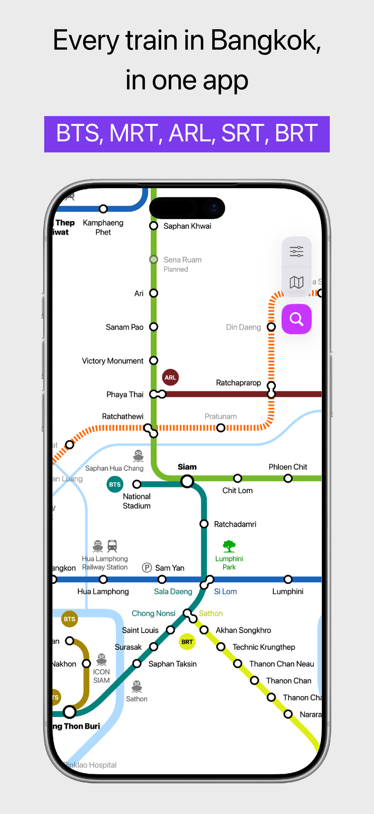
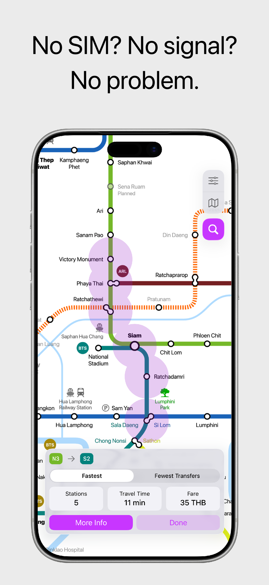
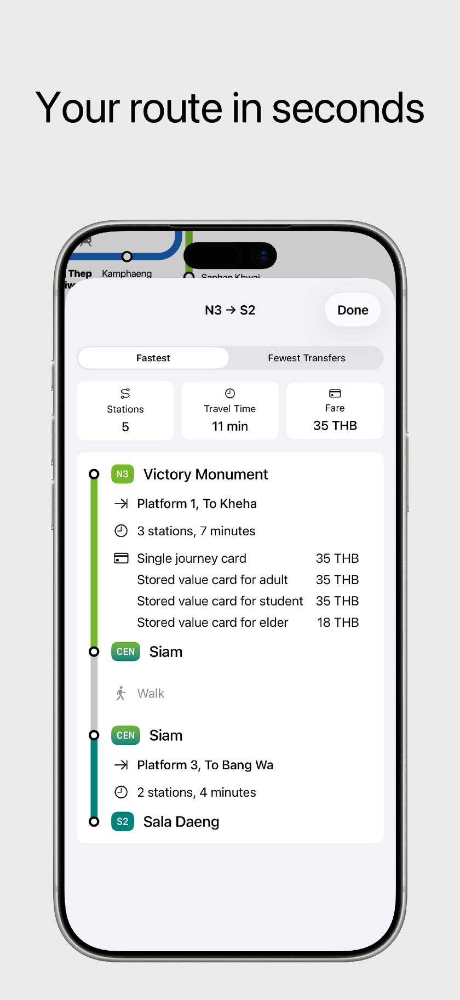
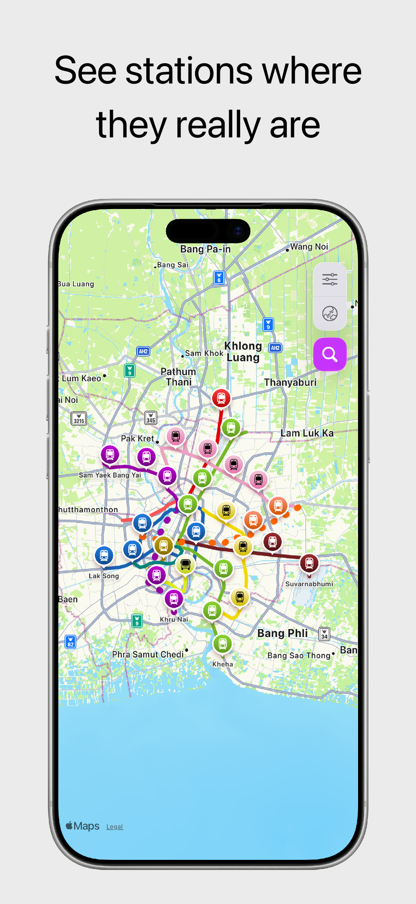

100% Offline-First
No SIM card, Wi-Fi, or roaming required. Full route finding, timetable lookups, and maps work completely offline.
The modern offline transit guide





Complete offline transit guide for Bangkok. Covers Sukhumvit & Silom BTS Skytrain, MRT Blue, Purple, Yellow & Pink lines, Airport Rail Link, Gold Line, and SRT Red lines.

The definitive rail guide for the Klang Valley & Kuala Lumpur. Covers Rapid KL LRT Kelana Jaya, Ampang & Sri Petaling lines, MRT Kajang & Putrajaya lines, KL Monorail, KTM Komuter, and KLIA Express.
No SIM card, Wi-Fi, or roaming required. Full route finding, timetable lookups, and maps work completely offline.
Get optimal travel paths, transfer stations, accurate ticket fares, and realistic travel times in seconds.
Toggle seamlessly between easy-to-read network diagram maps and realistic geographical street map overlays.
Full station departure schedules and last-train countdowns ensure you never miss your connection.
Check the exact exit number and detailed neighborhood area maps for nearby shopping malls, hotels, and attractions.
Instantly find any station with bilingual search in English, Thai, Malay, Japanese, Korean, or Chinese.
How Bangkok City Metro compares to single-operator transit apps and general navigation maps.
City Metro apps do not collect, track, or share your personal data or travel history. All routing computations run 100% locally on your device.
Yes. City Metro is built completely offline-first. All route finding, maps, timetables, and station exit information work 100% offline without needing a SIM card or data connection.
City Metro offers dedicated apps for Bangkok (BTS Skytrain, MRT Blue, Purple, Yellow & Pink lines, Airport Rail Link, SRT Red lines, Gold Line, BRT) and Kuala Lumpur (Rapid KL LRT, MRT Kajang & Putrajaya lines, KL Monorail, KTM Komuter, ERL KLIA Ekspres/Transit, BRT).
Unlike official single-operator apps (such as THE SKYTRAINs for BTS or Bangkok MRT for MRT Blue/Purple lines) which only cover their own respective networks and require an active internet connection, Bangkok City Metro unifies all Bangkok rail lines—BTS Skytrain, MRT Blue, Purple, Yellow and Pink lines, Airport Rail Link (ARL), SRT Red lines, and Gold Line—into a single 100% offline app with cross-operator route and fare calculations, station exit guides, and zero data tracking.
Bangkok City Metro operates 100% offline without requiring a SIM card, cellular roaming, or Wi-Fi, making it ideal for tourists arriving at the airport or underground commuters without cell reception. It also provides dedicated high-contrast schematic transit maps, exact station exit landmark directories, and offline cross-operator ticket fare calculations.
Yes, City Metro apps are free to download and use on the Apple App Store.
No. City Metro apps do not collect, store, or share any personal data, location history, or trip searches. All calculations are performed entirely on your device.
Available on the App Store for iPhone and iPad.